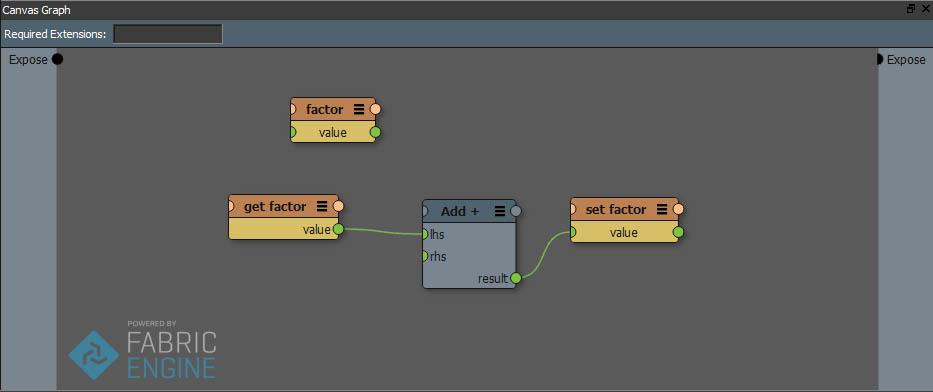
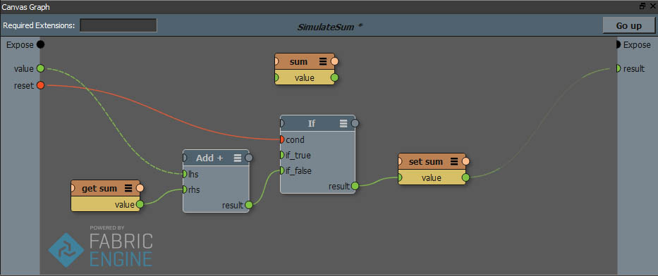

Variables¶
注釈
より詳しい技術的詳細はプログラマガイド内 変数（Variable） を参照してください。
Variables ノードは Canvas 中、特別なノードです。Variable は異なるグラフをまたがって評価される、値（あるいは状態）を受け渡すコンテナです。直前のシステム状態を必要とするシミュレーションなどで特に有用です。
Variable ノードの作成は、グラフ中の空白空間を右クリックし、”New variable”を選択します。もしくはTABキーを押しスマートサーチより var と入力してもよいです。
Variable ノードはグラフ中特定可能なように特別な色をしています。
Get 、 Set ノードから variableノードのデータを読み書きできます。どちらもコンテキストメニュー、もしくはスマートサーチ get に set いれ作成し、variable の名をいれます。
例として簡単なシミュレーションを実装してみましょう。時間経過とともに Float32 が繰り上がっていきます:
同様に、以下のグラフでは trail に位置が記録されていきます。